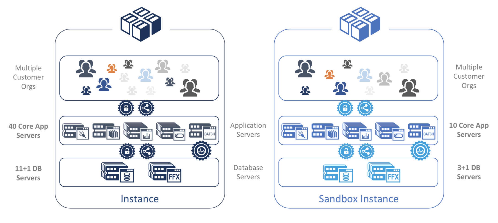

name: title class: center, middle # Machine Learning: .di-orange[Data Foundations<br>+ Algorithms & Applications] # .di-orange[Day 1] ??? # Key Points: # Question to Ask: --- # Objective * Get to know each other * Level set * Establish the overview of the course ??? # Key Points: - Get to know where we are and where we are going. # Question to Ask: --- class: center -- ## Who am I? ??? # Key Points: - Talk about your experiences with Big Data, Math, and Machine Learning # Question to Ask: -- ## Who are you? Name, Role at Salesforce, and Machine Learning Experience --- class: center, middle, di-style .quotation[A change in perspective is worth 80 IQ points.] .quotation-source[Alan Kay] --- # What is Machine Learning? -- * It's the rocketship by which we travel to Planet AI .center[.footnote[Pedro Domingos: The Master Algorithm]] -- * By the way, what's the difference between Machine Learning and AI? ??? * AI refers to any effort to teach computers to perform complex tasks with the ultimate goal to behave like (or better than) a human * e.g., a chatbot that mimics a human * ML = subfield of AI focused on learning -- * Oh, and what's fueling that rocketship? ??? * Big Data is fueling our rocketship -- * automating automation ??? * computers automate things, that's their big benefit -- * getting computers to program themselves -- * letting the data do the work -- * how is ML different from traditional software development? ??? * traditional programming: data + programs = output -- * computers produce output from what input? -- * ML is the reverse: data + output = programs -- * ML is also... --- class: center, middle # The Rockstar Job of the 21st Century... .footnote[CC BY 2.0, https://www.flickr.com/photos/onepointfour/12314110693] ??? # Key Points: - There are now more people who have taken a Coursera course or classes. - There are very few Data Scientists with a lot of experience - Hopefully we will be able to develop tools that don't require understanding of the math... # Question to Ask: --- class: center, middle # ...Requires a Lot of Sweeping! .footnote[CC BY 2.0, https://www.flickr.com/photos/42954113@N00/5639344792] ??? # Key Points: - In order to use Machine Learning, we need to have good data. - Bad data will give you bad results. - Cleaning up data is a very large part of this. - This is a significant portion of what data scientists do on a daily basis. - We will never have enough people to analyze the data that we have collected at this point # Question to Ask: --- .center[ .footnote[https://what-if.xkcd.com/77/] ] -- Machine Learning will NOT succeed without... -- * understanding our data -- * cleaning up our data -- * visualizing our data ??? # Key Points: - You can't do machine learning without data science - We will revisit this notion --- .center[# Isn't This Someone Else's Problem? "Poor data quality is enemy number one to the widespread, profitable use of machine learning." "The quality demands of machine learning are steep, and bad data can rear its ugly head twice — first in the historical data used to train the predictive model and second in the new data used by that model to make future decisions." "...today, most data fails to meet basic “data are right” standards. Reasons range from data creators not understanding what is expected, to poorly calibrated measurement gear, to overly complex processes, to human error. To compensate, data scientists cleanse the data before training the predictive model. It is time-consuming, tedious work (taking up to 80% of data scientists’ time), and it’s the problem data scientists complain about most." .footnote[https://hbr.org/2018/04/if-your-data-is-bad-your-machine-learning-tools-are-useless] ] --- # A Day in the Life of salesƒorce .center[ .middle[ ] ] ??? # Key Points: - The infrastructure team here has put together an example for us. - People come to you to manage things for them, they no longer worry about it they expect The 5 elements of trust. --- # Five Elements of Trust <span style='display:inline-block;margin-left:5px;text-align:center;vertical-align:middle;'>Security</span> <span style='display:inline-block;margin-left:65px;text-align:center;vertical-align:middle;'>Availability</span> <span style='display:inline-block;margin-left:60px;text-align:center;vertical-align:middle;'>Scalability</span> <span style='display:inline-block;margin-left:50px;text-align:center;vertical-align:middle;'>Multi-Tenant</span> <span style='display:inline-block;margin-left:25px;text-align:center;vertical-align:middle;'>Continuous<br>Innovation</span> -- .center[ ### What information from all of the data that we collect from our systems will alert us that things are about to go sideways? ] ??? # Key Points: - This is what all of your clients expect: - Trusted Security - data will not be compromised - "Always on" Availability - Performance at Scale - Systems will not decline when heavily used - Data stores able to handle dramatic increases in size and shape of data - Multi-Tenant Infrastructure - data and systems spread out across many servers-no single point of failure - Continuous Innovation - salesƒorce is on the forefront of emerging technologies that will help them achieve their goals # Question to Ask: - How do we make this happen? - Infrastructure team went through and analyzed the complex scenarios of the core systems --- class: center, middle # Core and Sandbox Instances  ??? # Key Points: - Multi-Tenant System - many customers one infrastructure - Shared services - Large number of applications servers and databases - Disaster recovery plans - Sandboxes - place where we can try things out without disrupting production systems - Evaluate time to live (TTL) for various instances running in different geographic clusters for different organizations with different characteristics in order to figure out what is going wrong before it goes wrong so we are not running around with our hair on fire. Make it boring. - Today we'll look at some of the data and read it in, tomorrow we'll get more into it. # Question to Ask: - Does anybody have any insight into what the infrastructure team has done? --- class: center, middle # Our Roadmap: Data Science Pipeline <img style="height: 400px;" src="images/data-science-process.png"> .footnote["Doing Data Science"] ??? # Key Points: - Map for today and tomorrow - From a book "Doing Data Science" by Cathy O'Neil and Rachel Shutt - They were 2 of the early rock stars of Data Science at Google - Nobody knows everything - Really cool book, each chapter written by a different person who introduces themselves and talks about what pieces of machine learning they know. - A lot of info, part of the goal of this course is to figure out what you're good at. - A large amount of what organizations do is: 1. Gather Data 2. Clean it Up 3. Tell a story - Web Analytics - Where people go, how long they stay, what they do - salesƒorce - where people go, where they get stuck - Machine Learning vs. Conventional methods in work @ salesƒorce - Everything is front loaded, trust the model, make it as simple as possible - If we don't understand the data that we have captured, then we enter a phase called __Exploratory Data Analysis__ - we don't know what is happening, we take tools and figure out what works - May need to go back and collect more data - Iterate - When we come up with good results, we may not be able to use them because you need to be able to explain __why__. How does it map to our business requirement? - New tools that operationalize your models, like TensorFlow - nobody cares that it is machine learning as long as it is dependable - Apple Photos facial recognition feature - If it gets worse or stops working I'd be upset - Netflix: you'll like this because you liked that - may not make sense if it is based on things you watched a year ago. How do we decide how often to update the model? - What questions am I trying to answer and how can I get that data cleanly, efficiently, authoritatively. - Data is starting to be treated more like software, If I asked you to pull up a version of your software from 6 months ago, you would be able to. What if I asked you to do the same thing with data? Would you be able to? Probably not because data gets updated and overwritten. # Question to Ask: - If you recommend a certain course of action, what is the first question you are gonna get asked? - WHY - Because things clustered in a high dimensional vector space is rarely a compelling answer - Simpler models may not work quite as well but will easier to explain --- name: data-and-data-processing class: center, middle, di-style # Data and Data Processing ??? # Key Points: - Have an open mind, it has the potential to make you a better engineer. # Question to Ask: --- # Objective * Connect Data Science with other Information Technology (IT) activities * Explore how we model our domains * Understand some of the obstacles we face ??? # Key Points: - How do we capture information about the world and where do we put it - Not as simple as it used to be - Challenges that arise in this process # Question to Ask: --- class: center, middle ??? # Key Points: - One of the business drivers for machine learning is this graph # Question to Ask: - What is disturbing about this graph? - Data collection is growing exponentially, Data analysts are not - We will never have enough analysts for the data we have already collected - We will never be able to bridge this gap - Data must always be interpreted - We create 2.5 quintillion bytes of data per day! --- class: center, middle # Humans Generate a LOT of Data! .center[.footnote[http://bit.ly/2fl2JCT]] --- .center[ #Demand for Data Scientists Will Soar 28% by 2020 "Annual demand for the fast-growing new roles of data scientist, data developers, and data engineers will reach nearly 700,000 openings by 2020." "By 2020, the number of jobs for all US data professionals will increase by 364,000 openings to 2,720,000 according to IBM." "Machine learning, big data, and data science skills are the most challenging to recruit for and potentially can create the greatest disruption to ongoing product development and go-to-market strategies if not filled." .footnote[http://bit.ly/2GOEMiy] ] ??? - It's been said that recruiting for the top Data Science/ML positions is getting close to the NFL–some of the top people are fetching $1M+ salaries --- class: center, middle # What is Data? ??? # Key Points: - Get students to answer What is Data? - we are information technologists, why are we not data technologists? - "data" is necessarily insufficient - data is a detection of something that has changed - data and information often used interchangeably; however, the extent to which a set of data is informative to someone depends on the extent to which it is unexpected - Temperature sensor reads 72º, what does that mean? where is it? why is it relevant? Without context data is useless # Question to Ask: - Why do we care that the temperature went from 72º to 73º? - Context - We are trying to contextualize the data so that it means something --- .center[ ] -- * "Burrito" of data, i.e., all of the things we can detect -- * only a small amount is of a structured nature ??? # Key Points: # Question to Ask: --- .center[ ] * What is structured data? ??? - follows a format - Where does that format come from? - previously defined - Who defines it? - people who are collecting data - Who is collecting data? - Business people, who want to use the data to help make decisions. - Implemented by a technical team - Capturing a world view and we now have a place to put stuff # Question to Ask: --- .center[ ] -- * most data is unstructured, we don't know what's in it * emails, videos, documents, wikis, images -- * "Show me a picture of a cat on the Internet" ??? # Key Points: - Natural Language Processing - Machine Learning - Deep Networks - Image Recognition # Question to Ask: - Why is it probably inefficient to have someone else tell you that it is a cat? - How do we deal with unstructured data? What are the problems we face? - We don't even know what is in it - Is it relevant? - Why do we care about it? - We can attempt to add a bit of structure to unstructured data via metadata (making it semi-structured data). - Google has given people incentives to add metadata to web pages - Example: Meeting notes, add what project they belong to, etc. - roughly 35-40% of 12B web pages have metadata --- .center[ ] -- * semi-structured data: how do we put some structure around the unstructured data? -- * encourage people to tell us what it is ??? # Key Points: - but they don't want to - Ability to leverage machine learning techniques depends on your ability to grasp the basic concepts of the data. There is a 'you must be this tall' as an organization to be able to exploit these things # Question to Ask: --- .center[ ] -- * data is raw -- * i.e., not connected to anything -- * data is a necessary but insufficient starting point ??? # Key Points: - Great that the temperature changes but if I don't care it's just noise to me # Question to Ask: --- .center[ ] -- * relate data to other data we have which turns the data into information -- * a _descriptive_ perspective of the world ??? # Key Points: - That allows us to ask questions of it: Who, What, When, Where, Why, How? - Descriptive perspective on the world - a lot of value there, but it's not enough - this creates a snapshot that is constantly out of date, because the world is constantly changing - Most companies stop there! - There's a lot of information but I don't care about most of it - What do I care about? - How do I find what is relevant to me? - Drawing conclusions from this data is very challenging - How does this sales activity affect those customers? # Question to ask: --- .center[ ] -- * shift from a description of the world to a _predictive_ nature based on a prioritization of information as a result of context -- * what makes information knowledge is the application of context ??? # Key Points: - "Information becomes knowledge when you decide to wear a sweater" - Relations help us understand the context - Historically, the person asking the questions give the context in the query - Google has trained us to let them figure the context out - Google manages context and makes it seamless to users. That sets the bar high for us. Thanks Google! - NOW: The context has to be inferred in the event - "Find me a picture of a pony!" voice command - who is the person asking? - what do they mean by 'pony'? - Put the right information in the right hands at the right time. - Requires that you understand the domain and the audience. - Any Information Technology system that stops at the relation level (doesn't have the infrastructure to manage context) is about to be overwhelmed. - Google -> keyword and page rank, millions to billions. Created __The Knowledge Graph__ to manage content and people who consume it. - Match making, disambiguation, co-reference resolution is a lot easier - We are still developing tools to define things probabilistically, but we still need tags & keywords to learn - some the stuff we understand, some stuff will tell us what it is, some stuff we need to figure out - Somebody sat down and decided what things mean.... what could go wrong? - Different people think about things in different terms and find different things important # Question to ask: --- .center[ ] -- * patterns that we discover across the knowledge show us principles that result in wisdom ??? # Key Points: - Data is raw events - Information is a description of the world - Knowledge is the prioritization of information - The function of information technology in organizations is to: - Capture data - Organize it into related sets - Prioritize it - Decide where to go next - The Progression is: - Descriptive Approach (what is happening) - Predictive Approach (what could happen) - Prescriptive Approach (what should happen) - Machine Learning extracts value while keeping the context - The next step is prescriptive, being told you should wear a sweater (few organizations have been successful at this.) - We are hoping to rely on ML to find these principles & patterns so we can become more data driven and data directed. # Question to Ask: --- class: center, middle # What is the Problem? ??? # Key Points: - Ask students - No technical problems, social problems. People are difficult - If your technology requires agreement, it won't work - No way to understand it all - Different levels of clarity and consistency # Question to Ask: 1. How do you know what data exists? - you hear about it - huge problem 1. How can you use it, how often is it updated? 1. Why was the data captured? (What was not captured?) 1. Government Regulation - Can't use a lot of things --- # Wasting Time .center[.footnote[https://tinyurl.com/ybwdq34u]] ??? # Key Points: - We'll cover some strategies and tools today that are very successful at bridging this gap - The right data is essential to everything we are doing here - What is the right data? - we don't know, this is the problem - building an inherent distrust of the data is important - especially data that may be human generated, typos, inaccuracies, etc. - We need to clean data up and tell people that we have this data and this is what it is. # Question to Ask: -- * Data professionals spend 60% of their time "getting to insight" -- * 37% of this time is spent searching for data -- * 36% of this time is spent preparing data -- * Only 27% of that time is actual analysis -- * 50% of the time is spent searching for or replicating existing data -- * 30-50% of organizations are not where they want to be -- * Costs to organizations annually -- * $1.7 million/100 employees in U.S. -- * €1.1 million/100 employees in Europe --- class: center, middle, di-style .quotation[It is evident that many professionals are not aware of what resources are available within data assets like data lakes, how to access the data, where it came from, or how to glean trusted insights...] .quotation-source[https://tinyurl.com/ybwdq34u] ??? # Key Points: # Question to Ask: --- class: center, middle, di-style .quotation[Unless organizations make changes to their infrastructure now, and close the gaps on data discovery, integrity and cataloging, processes will only become more inefficient as data volume and variety continues to grow.] .quotation-source[https://tinyurl.com/ybwdq34u] ??? # Key Points: - Unless we start tackling this problem the curve (Data vs. Data Scientists) is only going to get worse - We'll have to look harder in bigger piles and get less results # Question to Ask: --- class: center, middle # Data Science Pipeline .footnote["Doing Data Science"] ??? # Key Points: - This is where we are on our map - There is a 'you must be this tall to go on this ride' - the raw discipline of capturing information, storing it and being able to connect it to other things - the answer is not always go get more, lots of factors can limit you to what can we do with what we have - Part of being a good data scientist is understanding the cost & benefits of getting more data vs. sticking with what you have - Sometimes you can't just "collect more data" # Question to Ask: --- class: center, middle ??? # Key Points: Some of the things that could go wrong - Completeness - I don't have enough data, this is a business problem Ask them to capture more going forward - at what point is it complete? probably never! - Now that we are going out and getting our own data, or asking for more data, we have a uniqueness problem - Uniqueness - some organization outsource their IT to "save money" (joke's on them) - result is it's expensive and slow to get anything done so everybody just had their own copies of the data - how do I de-dupe this? - turns into a timeliness problem - Timeliness - Where do I go to find the latest version of this stuff? - Validity - Accuracy - Consistency - People make bad choices, we need to get our head around what is going on with the data in order to do anything useful # Question to Ask: 1. Have you run into any of these issues yourself? Tell us a short story. --- # Metadata ??? # Key Point: - One of the things we use when we capture and store data is Metadata - It is by definition data about data - correct but not very useful - Business Person will capture entities and relationships - Technical Person will translate to structured form: spreadsheets, databases, etc. - Metadata about the unstructured stuff: - how big is it? - where is it? - who produced it? - what tags are associated with it - What do all the above mean? and how do I leverage that? - The shape of the data: what, how much, form, where - Business functions are generally the source of Machine Learning endeavors - Metadata standards # Question to Ask: -- * Data about data -- * Types of metadata -- * Business metadata -- * Technical metadata -- * Media metadata -- * Semantic metadata --- background-image: url(images/plane.jpg) class: center .footnote[CC BY-SA 2.0, https://www.flickr.com/photos/jasonohalloran/456177849/] ??? # Key Points: - Think about modeling stuff after airlines. - We often use Domain Driven Design and bounded contexts to frame our thinking. # Question to Ask: - What are some business metadata contexts that we might care about? - There are things called airplanes, passengers and airports - We put passengers on planes and send them from one airport to another - What is the set of things we need to define our domain? - Where do we find the boundaries in the organization. - We cannot make everybody agree on what's important and we don't want to. --- # Business Metadata .compact[ | Term | Description | |-------------------------------| | Airline | A company that owns one or more airplanes that are used to transport passengers from one airport to another. | | Airport | A transportation destination at which airlines have routes to transport passengers. | | Airplane | A vehicle that flies and lands at airports to pick up passengers. | | Routes | A connection between two airports that an airline flies its passengers. | ] ??? # Key Points: - Business people talk about what. # Question to Ask: --- # Technical Metadata ```sql sqlite> .tables airlines airports routes ``` ??? # Key Points: - Technical people translate that what into structure. (SQLite Database probably won't be what you'll be using but bear with me) - Describe table and types - presumably there is a data dictionary that will explain what these things mean - Everything has identity - but outside of the database it is useless - What attribute gives the thing identity, Is there a service where I can ask questions about that identity, once I get something back how do I translate that? - All of this usually gets lost # Question to Ask: -- ```sql sqlite> .schema airports CREATE TABLE airports ( [index] INTEGER, [id] TEXT, [name] TEXT, [city] TEXT, [country] TEXT, [code] TEXT, [icao] TEXT, [latitude] TEXT, [longitude] TEXT, [altitude] TEXT, [offset] TEXT, [dst] TEXT, [timezone] TEXT ); CREATE INDEX ix_airports_index ON airports ([index]); ``` --- # Media Metadata .center[ .middle[ ] ] ??? # Key Points: - Usually tells us: - How big is it? - Who produced it? - Where did it come from? - Doesn't usually tell us what something is (e.g., a 737) - When putting together presentations like these: Find me creative commons images with little to no restrictions on use - give metadata to find stuff that is relevant to our purpose - Use Metadata to our advantage - if I have found you the right thing, but it is 8GB I want to know it is 8GB before I ask whether you want to download it to your phone or not # Question to Ask: --- # Semantic Metadata * One approach is JSON-LD (JSON + Linked Data) * JSON-LD organizes and connects messy and disconnected data ```json { "@context": "http://schema.org", "@type": "Organization", "url": "http://united.com", "contactPoint": [ { "@type": "ContactPoint", "telephone": "+1-800-864-8331", "contactType": "customer service" } ] } ``` .center[.footnote[https://json-ld.org/]] ??? # Key Points: - This is really semantic metadata - Fairly subtle difference from JSON, makes all the difference in the world - The @context and @type is backwards compatible, there shouldn't be any in JSON '@' makes it unique - JSON-LD specific terms that tell us how to build up identifiers and how to resolve things - known structure of self describing relationships that works with existing tools - go to json-ld.org to demonstrate... - use the same structure to talk about different things - list of terms that Google, Yahoo, Bing, etc. came up with to describe stuff - name is schema.org/name - If you want to know more go to [json-ld.org](https://json-ld.org) - standard of W3c - because it's a standard, it can losslessly be converted to another standard (e.g., Turtle https://www.w3.org/TR/turtle) # Question to Ask: -- ```turtle @prefix schema: <http://schema.org/> . [ a schema:Organization ; schema:contactPoint [ a schema:ContactPoint ; schema:contactType "customer service" ; schema:telephone "+1-800-864-8331" ] ; schema:url <http://united.com> ] . ``` --- .center[ # http://schema.org/Organization ] - This is metadata - drives the cost of integration down to almost nothing, which lets you find, ingest, and use data - if you have __`httpie`__ installed, you can do<br> __`http http://schema.org/Organization Accept:application/ld+json`__ - when you get a 303 redirect, add __`--follow`__ and do it again ??? # Question to Ask: - why is that an interesting thing to do? - it is just a key, but it is a key that is expressed as a URL. Because that is a url, you can ask for it. - extremely extractable and convertible --- # Example of Semi-Structured * Semantic Metadata added to an Unstructured HTML Document ```html <html> <head> <script type="application/ld+json"> {"@context": "http://schema.org", "@type": "Organization", "url": "http://united.com", "contactPoint": [ { "@type": "ContactPoint", "telephone": "+1-800-864-8331", "contactType": "customer service" } ] } </script> </head> ... </html> ``` ??? # Key Points: - Here's an example of United's website - they are an organization, it allows you to take otherwise unspecified terms turn it into a URL, - Helps you drive the cost of integration down to nothing - Put metadata at the top of HTML # Question to Ask: --- # As a Developer, Google lets you... - Add <a href= https://developers.google.com/gmail/markup target=_new>actions</a> to emails - Mark up <a href=https://developers.google.com/search/docs/data-types/events target=_new>events</a> so users can discover them through Google Search results (and other Google products like Google Maps) ??? # Key Points: - Google uses this same metadata in emails to create calendar reminders, 'Track This Package' buttons, and such - JSON-LD makes this possible - Draw conclusions: - You are in San Fran on this date, I know because I have access to your calendar and you have a meeting there, this thing that you are interested in is also in San Francisco on this date. - Now Google can do more - it can learn about the world (build context) by using such standards. This provides connection between the data and our world. - This is fluidity of data acquisition. # Question to Ask: 1. If you could access some additional context data like Google does (location, events, etc), what context-driven feature you would add to your app or app you use inside the company? --- name: data-sources class: center, middle, di-style # Data Sources ??? # Key Points: - Any questions on the previous section? - Life used to be easy, there was one place to store things. Where? Documents - Relational model is great for domains that we understand, it becomes challenging when we talk about things that are outside the database. - $1.7 Million/100 employees is wasted each year regenerating/finding things - MongoDB Resume driven development is bad news - But we are in the "right tool for the right job" age # Question to Ask: --- # Objective * Consider where data comes from * Understand some of the integration issues we will face * Consider our data storage options * Read data into Python in a convenient format ??? # Key Points: # Question to Ask: --- .center[ # What did you do Saturday night? ] -- * Can you prove it? -- * Consider data "contrails" ??? # Key Points: - Prove it (data contrails come off of us all the time) - Somebody bought a movie on Amazon and you haven't reported it stolen - Data comes from all over - We ignore the data at our peril - it is useful, when Google knows about me - from a personalization strategy helps us take information and use it - why is this tricky with our existing technology? - where do we store it? - what if there is no idea of a 'Museum of Ice Cream' in our database? We create a new entity... or we just throw it away - it doesn't make sense to change our world view just because one person does one thing - but we never know when that one thing will make or break a relationship with a customer # Question to Ask: --- # Data Modeling Choices * Relational * Key-Value (e.g., Redis) * Column (e.g., Cassandra) * Document (e..g, CouchDB) * Graph (e.g., Giraph) ??? # Key Points: - Relational DBs are not going to work if the things we are capturing are inconsistent - Key-Value Stores / NoSQL - Column stores - as opposed to storing by rows - e.g., Cassandra - write super quick, figure out what it means later - new business models emerged that changed what we needed to do with the data # Question to Ask: --- class: center, middle .footnote[Michael Bowers] ??? # Key Points: - Bottom left is where we had been: Highly structured relational databases - high bandwidth between those asking the questions and the data, so high, queries are sent into the black hole that is the data - Treating all data storage systems the same: - Databases hold the world at bay while a person asks a question - Resulted in systems broken into transactional systems and analytical systems - relieves world changing pressure, but creates a new problem: - Data is collected in the transactional, but people ask questions on the analytical __ASK QUESTIONS__ - The way we are capturing data is changing, the way we capture it can tell us things about it - Social networks - Picking the right solution for the business case is leading us towards increasingly heterogeneous data stores - What does that do to our data integration activities? - makes it __WAY__ more difficult - JSON-LD sits above all that # Question to Ask: - What is the most current view of the world? - Transactional - Where do people ask questions? - Analytical, which means that we are asking questions about the world *as it was* - A daily data dump is no longer really possible in the 21st Century: - If I need something specific at a retailer, I will look it up online to see if they have it then go into the store. I'll be upset if they don't have it - Amazon's success is due to being successful at this - Let's say you are hired at amazon to manage the release of the new harry potter book at a warehouse. - You'd put them all in the same place. Why is that a problem at scale? - Bottleneck - everybody goes to the same place - Instead they randomly distribute it, they have solved the transactional-analytical problem and put the right data in the right hands at the right time. - Grocery stores want to cut the cost of having people check you out, so they put barcodes on everything and have you check yourself out. The burden is transferred to the customer (who usually isn't very good at it). - AmazonGo - put cameras everywhere, see when you reach for a shelf and put something in your cart, at that to you bill, update the inventory, when you walk out they know how much to charge you and they do. - __You cannot beat that customer experience.__ --- # RDBMS * Established technology, well-understood * Works best for stable domains -- # Spreadsheets * Easy tooling * Familiarity * Rapid experimentation * Customization ??? # Question to Ask: - Why don't we like spreadsheets? - Silos - They're in your inbox, everyone has a different version # Question to Ask: --- name: linked-data class: middle, center <a href="http://lod-cloud.net/versions/2017-08-22/lod.svg"><img style="height: 600px;" src="images/lod.png"></a> .footnote[CC BY-SA, http://lod-cloud.net] ??? # Key Points: - 1100 data sets representing 10s of billions of facts through 100s of millions of links - made by volunteers - These volunteers are succeeding at what big companies cannot - The Linked Data Project - This is a Portable Network Graphic that links to an SVG - Scalable Vector Graphic is a form of hypermedia generated from the data. You can scroll over individual data sets and see all their connections, you can click on them and it will take you to a description of the data set - It is self documenting and makes it super easy to find information - Until we get ahead of the data, to things like this, we are going to be constantly running behind - You can ask crazy questions like all the Pharma companies in California manufacturing NSAIDs # Question to Ask: - Any questions? --- class: center, middle, di-style # Setting up a .di-orange[Data Science Environment] ??? # Key Points: # Question to Ask: --- name: Install # Let's Install Some Essential Tools! * Remember that one of our goals is to gain some familiarity with commonly-used data science tools * We're going to use a tool called Jupyter notebooks to do our hands-on work * Let's go... ??? #Key Points: - Now we are going to transition away from all of the different ways you can store data into reading some data - Python on its own is pretty bad, tools have come out that have made it useful --- # Step 1: Install Anaconda * Anaconda is an open source distribution of Python and essential data science tools. We use the 5.2 version (Anaconda Navigator 1.8.7) 1. Go to https://www.anaconda.com/download 1. Make sure you download the Python 3 version 1. OSX Install - accept the defaults EXCEPT 1. At the __Installation Type__ phase: 1. Click __Change Install Location__ and choose __Install for me only__ 1. Choose __Customize__ at the __Installation Type__ phase, and disable the __Modify PATH__ option. 1. Microsoft VSCode is _not required_ 1. Windows Install - accept the defaults EXCEPT 1. At the _Destination Select_ phase pick "Just Me" 1. Microsoft VSCode is _not required_ 1. Start Menu | Anaconda Prompt 1. conda install -c conda-forge sparqlwrapper 1. conda install -c anaconda graphviz ??? # Key Points: * If they have Anaconda installed already, they must check for Anaconda Navigator version is = 1.8.7. If not, have to uninstall and reinstall the stack. # Question to Ask: --- # Step 2: Launch the Anaconda Navigator * You should have an application called Anaconda Navigator in Applications or Start menu .center[] ??? # Key Points: # Question to Ask: --- # Step 3: Launch Jupyter .center[<img style="height: 400px;" src="images/Navigator2.png">] ??? # Key Points: - Need to know how we're going to distribute the notebooks and data... # Question to Ask: --- # Step 4: Copy/Paste URL into Your Browser Generally, the prior step will launch a browser window. If that did not happen... .center[] ??? # Key Points: # Question to Ask: --- ## Step 5: Navigate to the file __`Demo - Jupyter.ipynb`__ .center[] ??? # Key Points: - Now switch from the presentation to the Jupyter notebook and spend 5-10 mins. going through the notebook and showing the basic features # Question to Ask: --- class: center, middle, di-style # Demo: .di-orange[Pandas] ??? # Key Points: # Question to Ask: --- name: Demo1 # Demo: Pandas * contraction of "__pan__el __da__ta" * de facto data analysis toolkit (https://pandas.pydata.org) * there are screenshots in this presentation to maintain continuity, but let's open the notebook named __`Demo - Pandas.ipynb`__ and go through it together * when done, click <a href="#Exercise1">here</a> to skip screenshots ??? # Key Points: # Question to Ask: --- # Pandas Series ??? # Key Points: - Objects from Pandas. Important to what we are doing here - Basically an Indexed slice-able dictionary - State population - auto mapped to index - Do the same thing for area - new series with the same keys, Pandas will auto merge those data sets. # Question to Ask: -- ```python >>> population_dict = {'California': 38332521, 'Texas': 26448193, 'New York': 19651127, 'Florida': 19552860, 'Illinois': 12882135} >>> population = pd.Series(population_dict) >>> population California 38332521 Florida 19552860 Illinois 12882135 New York 19651127 Texas 26448193 dtype: int64 ``` -- ```python >>> area_dict = {'California': 423967, 'Texas': 695662, 'New York': 141297, 'Florida': 170312, 'Illinois': 149995} >>> area = pd.Series(area_dict) >>> area California 423967 Florida 170312 Illinois 149995 New York 141297 Texas 695662 dtype: int64 ``` --- # Pandas DataFrame ```python >>> states = pd.DataFrame({'population': population, 'area': area}) >>> states area population California 423967 38332521 Florida 170312 19552860 Illinois 149995 12882135 New York 141297 19651127 Texas 695662 26448193 ``` ??? # Key Points: - Now I can say make me a data frame with area and population - Looks like a spreadsheet - very flexible data structure for learning things (where to store it is another thing) # Question to Ask: --- ??? # Key Points: - You can also: - Filter - Hide/show columns - Merge columns # Question to Ask: - Everybody okay with this -- ```python >>> states.index Index(['California', 'Florida', 'Illinois', 'New York', 'Texas'], dtype='object') ``` -- ```python >>> states.columns Index(['area', 'population'], dtype='object') ``` -- ```python >>> states['area'] California 423967 Florida 170312 Illinois 149995 New York 141297 Texas 695662 Name: area, dtype: int64 ``` -- ```python >>> states[area > 200000] area population California 423967 38332521 Texas 695662 26448193 ``` -- ```python >>> states.values array([[ 423967, 38332521], [ 170312, 19552860], [ 149995, 12882135], [ 141297, 19651127], [ 695662, 26448193]]) ``` --- # Reading CSV Files into Pandas ```python In [1]: import pandas as pd data = pd.read_csv('data/agg_database_daily.csv') ``` ??? # Key Points: - Has everyone downloaded the data? (Links from Michael) - Everyone had Anaconda installed - Slides, a source directory with all the python notebooks in it, with a data directory inside it that will hold all the data - Pandas will read in the .csv into a data frame. One line parses the data and turns it into something usable - Head returns first 5 or so rows # Question to Ask: - What do we notice about the data we have read in? - It assumed we had a header row. - There is now a column called 12.88 - We need to tell it that it's wrong -- ```python In [2]: data.head() ``` -- .center[] -- ```python In [3]: data.shape Out [3]: (55285, 20) ``` --- # Specifying No Headers ```python In [3]: import pandas as pd data = pd.read_csv('data/agg_database_daily.csv', header=None) ``` ??? # Key Points: - Rerun this and tell it that header = none, - still incorrect, but it makes more sense - Added another row # Questions to Ask: - What are the columns though? - you have to go figure it out -- ```python In [4]: data.head() ``` -- .center[] -- ```python In [5]: data.shape Out [5]: (55286, 20) ``` --- # Specifying Column Names ```python In [6]: data.columns = ['date_key','datacenter','superpod','pod','max_redo_size', 'max_active_sessions','max_db_cpu_user','max_peak_buffer','avg_db_cpu_system', 'avg_db_cpu_user','total_db_size_in_tb','used_db_space_in_tb', 'free_db_space_in_tb', 'asm_free_db_space_in_tb','asm_used_db_space_in_tb', 'asm_total_db_size_in_tb', 'last_modified','asm_used_db_space_perc', 'oem_cpu_util','oem_read_io_latency'] ``` ??? # Key Points: - Once you have figured out what all the columns are, you can go add them all at once. - These are not self describing, but that is what JSON-LD is for - This is information from the infrastructure team - Daily aggregated results for some of the data centers of pods - 20 columns # Question to Ask: - How do we figure out which are potentially useful for predicting pod failure? - How do we even start? - Try -- ```python In [7]: data.head() ``` -- .center[] --- # Missing Values ```python In [7]: data['max_active_sessions'] Out [7]: 0 87 1 69.13125 2 86 3 72 4 50 5 37 6 38 7 \N 8 89 9 94 ... ``` ??? # Key Points: - Data collected from python scripts running on various different nodes. - Occasionally something would spew something and it would show up in the wrong place and an end of line character would show up. # Question to Ask: --- # Handling Missing Values ```python In [8]: data = pd.read_csv('data/agg_database_daily.csv', header=None, na_values=[r'\N']) data.columns = ['date_key','datacenter','superpod','pod','max_redo_size', 'max_active_sessions','max_db_cpu_user','max_peak_buffer','avg_db_cpu_system', 'avg_db_cpu_user','total_db_size_in_tb','used_db_space_in_tb', 'free_db_space_in_tb','asm_free_db_space_in_tb','asm_used_db_space_in_tb', 'asm_total_db_size_in_tb','last_modified','asm_used_db_space_perc', 'oem_cpu_util','oem_read_io_latency'] ``` ??? # Key Points: - Take certain values and replace them with Not Available - In this case the new line character has showed up in places it wasn't necessarily supposed to, so we are telling Pandas to treat it as NA - Go through and see that NaN has replaced all of the \N values - We are establishing mechanism not policy. Once I put it into a known unknown format we can drop them all or replace them all much more easily, depending on the scenario # Question to Ask: - Does this all make sense? -- ```python In [7]: data['max_active_sessions'] Out [7]: 0 87 1 69.13125 2 86 3 72 4 50 5 37 6 38 7 NaN 8 89 9 94 ... ``` --- # Dropping Missing Values ```python In [9]: data['max_active_sessions'].dropna() Out [9]: 0 87.000000 1 69.131250 2 86.000000 3 72.000000 4 50.000000 5 37.000000 6 38.000000 8 89.000000 9 94.000000 10 35.542683 11 57.950000 12 44.000000 14 46.000000 15 47.000000 16 107.000000 17 83.000000 18 77.470290 19 89.000000 ... ``` ??? # Key Points: - If 10 rows out of 5,000 are bad, it is probably okay to just use a smaller sample size. # Question to Ask: --- # Reading SQLite into Pandas ```python >>> import pandas as pd >>> import sqlite3 >>> conn = sqlite3.connect("data/flights.db") >>> data = pd.read_sql_query("select * from airlines", conn) >>> data.shape (6048, 9) ``` ??? # Key Points: - establish a connection to a SQLite database and read that in - One set is coming in from a .CSV another is coming in from a Relational Database. There are similar ways to pull things in from Oracle, from PostGres, from Mongo - Once we have a playground to pull things in from all over and we can slice things up and put things together which makes it much easier to do this kind of analysis. - Much easier than doing it with relational databases and production level systems. Which you're not allowed to do anyway. - Don't forget to be a good citizen and close your connection. # Question to Ask: -- ```python >>> data.head() index id name alias iata icao \ 0 0 1 Private flight \N - None 1 1 2 135 Airways \N None GNL 2 2 3 1Time Airline \N 1T RNX 3 3 4 2 Sqn No 1 Elementary Flying Training School \N None WYT 4 4 5 213 Flight Unit \N None TFU callsign country active 0 None None Y 1 GENERAL United States N 2 NEXTIME South Africa Y 3 None United Kingdom N 4 None Russia N``` -- ```python >>> conn.close() ``` --- name: Exercise1 class: center, middle, di-style # Exercise: .di-orange[Pandas] (open the notebook named __`Exercise 1 - Pandas.ipynb`__) --- name: Exercise2 class: center, middle, di-style # Exercise: .di-orange[Reading TTL Data] (open the notebook named __`Exercise 2 - Reading TTL Data.ipynb`__) --- # Recap: Data Sources Recap * What are trying do? * we're reading data from relational databases, spreadsheets, etc. * Why would we choose to put data into these different types of storage? * differently-shaped data * high-volume data * high-velocity data * in other words, there are compelling business and technical reasons * We also talked about <a href="#linked-data">_linked data_</a> * e.g., <a href="http://wiki.dbpedia.org/" target=_new>DBpedia</a> is a dataset drawn from the editorial process of <a href="https://www.wikipedia.org/" target=_new>Wikipedia</a> * for anything in Wikipedia, such as a city, there is structural information (e.g., when city was founded, geographic location, etc.) * the entities in DBpedia are generated from the pages of Wikipedia * they're resolvable through URLs, and the relationships themselves are also resolvable * node ids/links are like global, disambiguable, resolvable DB keys * relationship ids/links are like global, disambiguable, resolvable column names ??? - there are Python tools for plugging in Mongo, etc. --- class: center, middle, di-style # Demo: .di-orange[Reading Linked Data] ??? # Key Points: # Question to Ask: --- name: Demo2 # Demo: Reading Linked Data * there are screenshots in this presentation to maintain continuity, but let's open the notebook named __`Demo - Reading Linked Data.ipynb`__ and go through it together * when done, click <a href="#Exercise3">here</a> to skip screenshots ??? # Key Points: # Question to Ask: --- ```python import pandas as pd import json from SPARQLWrapper import SPARQLWrapper, JSON ``` -- ```python def get_sparql_dataframe(service, query): """ Helper function to convert SPARQL results into a Pandas data frame. """ sparql = SPARQLWrapper(service) sparql.setQuery(query) sparql.setReturnFormat(JSON) result = sparql.query() processed_results = json.load(result.response) cols = processed_results['head']['vars'] out = [] for row in processed_results['results']['bindings']: item = [] for c in cols: item.append(row.get(c, {}).get('value')) out.append(item) return pd.DataFrame(out, columns=cols) ``` -- ```python wds = "https://query.wikidata.org/sparql" ``` --- ```python # This SPARQL query will be sent to the SPARQL endpoint defined in the previous # step. It mixes three vocabularies that each have their own definitions but is # ultimately a selection from the Wikidata graph. We're looking for distinct rows # of individuals who have an orcid (https://orcid.org) and any English descriptions # and labels we might also have about them. We're matching a pattern in the graph # for any node that is connected to other nodes with these relationships. # To understand what __`wdt:P496 means`__, expand it into its full URL by applying # the prefix for wdt and then issuing an HTTP request to # http://www.wikidata.org/prop/direct/P496. # For more info, consult Bob DuCharme Learning SPARQL (2nd Edition) rq = """ PREFIX bd: <http://www.bigdata.com/rdf#> PREFIX wikibase: <http://wikiba.se/ontology#> PREFIX wdt: <http://www.wikidata.org/prop/direct/> select distinct ?item ?itemLabel ?orcid ?description WHERE { ?item wdt:P496 ?orcid OPTIONAL { ?item schema:description ?description filter (lang(?description) = "en") } SERVICE wikibase:label { bd:serviceParam wikibase:language "en" . } } """ ``` --- name: Exercise3 class: center, middle, di-style # Exercise: .di-orange[Querying Linked Data] (open the notebook named __`Exercise 3 - Querying Linked Data.ipynb`__) --- name: data-driven class: center, middle, di-style # Data-Driven ??? # Key Points: - We have talked about where data comes from - about where to put it, highly structured (relational databases), loosely structured (documents and key-value stores) - Give up some agency to the data, but requires discipline, we don't want to be data driven off the road # Question to Ask: --- # Objective * Consider the mental shift in letting the data drive our activities * Explore the discipline needed to understand our data * Friendly statistics intro/re-familiarization * Understand some of the challenges that emerge with being data driven ??? # Key Points: * data-driven = giving up some agency and letting data tell us what to do * in terms of some metric: maximizing profit, maximizing customer satisfaction, minimizing downtime, etc. # Question to Ask: --- class: center, middle # Data Science Pipeline .footnote["Doing Data Science"] ??? # Key Points: - We are probably in the exploratory data analysis phase - We've collected data and read it in but we don't really know what's going on yet - We want to familiarize ourselves with the data # Question to Ask: --- class: center, middle # Which university degree led to the highest average starting salary at the University of North Carolina in the 1980's? ??? # Key Points: - Put on your thinking cap and go back in time.... # Question to Ask: - what were some new and emerging fields? - Computers, Business, Finance - Guesses? --- class: center, middle # Geography! ??? # Key Points: - What is going on here? - Michael Jordan studied Geography at UNC and went directly into Basketball. - It is easy to tell lies with data - If we don't have a good understanding of the shape of the data we may come to conclusions that make no sense # Question to Ask: --- class: center, middle, di-style # Intro to (or Review of) .di-orange[Statistics] ??? # Key Points: # Question to Ask: --- # Can you explain these terms? * Mean * Variance * Interquartile range * Skew ??? # Key Points: - Idea is to gauge the class on stats knowledge and set pace for this section. # Question to Ask: - See if the students can define these / explain these. --- name: Demo3 # Demo: Let's Make Some Data * there are screenshots in this presentation to maintain continuity, but let's open the notebook named __`Demo - Let's Make Some Data.ipynb`__ and go through it together * when done, click <a href="#DescriptiveStatistics">here</a> to skip screen shots ??? # Key Points: - We are going to model an age range of adults # Question to Ask: --- ```python >>> # Generate a list of numbers 20 to 59 >>> ages = range(20, 60) ``` ??? # Key Points: - Our range will be from 20 to 59, randomly generate 100 # Question to Ask: - What is our oldest age, youngest age, average age? - once we have more than 5 values it gets harder to pick those things out immediately -- ```python >>> # Select 100 numbers at random from the set of numbers 20 to 59 >>> random_ages = [random.choice(ages) for _ in range(100)] ``` -- ```python >>> random_ages [27, 21, 20, 22, 21, 27, 25, 52, 56, 43, 33, 28, 31, 30, 41, 29, 38, 52, 48, 24, 50, 31, 29, 56, 45, 54, 37, 33, 22, 33, 23, 40, 37, 23, 28, 38, 41, 34, 35, 40, 25, 57, 32, 48, 56, 54, 39, 25, 57, 24, 26, 52, 26, 35, 57, 39, 26, 32, 50, 52, 54, 53, 30, 53, 56, 25, 43, 38, 53, 46, 51, 51, 35, 38, 20, 52, 47, 53, 45, 27, 22, 26, 25, 47, 36, 52, 54, 58, 31, 42, 46, 46, 43, 33, 35, 48, 49, 55, 36, 36] ``` -- ```python >>> max(random_ages) 58 ``` -- ```python >>> min(random_ages) 20 ``` --- # Range ??? # Key Points: - Range: - Pretty simple, just Max Value - Min Value - Tells you something about the values, but not quite enough in most cases. - [10, 10, 100, 100] has a range of 90, but so does [10, 50, 50, 50, 50, 100] - Feels like we are missing something - numpy.ptp = Peak to Peak gives us the range # Question to Ask: -- ```python >>> def calc_range(x): ... return max(x) - min(x) ... ``` -- ```python >>> calc_range(random_ages) 38 ``` -- ```python >>> nums = [10, 10, 100, 100] >>> calc_range(nums) 90 ``` -- ```python >>> nums = [10, 50, 50, 50, 50, 100] >>> calc_range(nums) 90 ``` -- ```python # Peak to Peak - returns the range, the min is a "peak" and the max is a "peak" >>> numpy.ptp(random_ages) 38 ``` --- # Mean ??? # Key Points: - Range is not impacted by all of the values in a data set. Averages are, particularly the Mean. - Talk about the Michael Jordan Example - Mean is affected by outliers - Can be abused and used to lie: - Bill Gates coming to a conference ups the average net worth for the conference - Zip Code, if a super rich person moves into the neighborhood, the neighborhood could lose gov't assistance that is based on average household income - In order to temper this, we have the Median # Question to Ask: - How do we calculate the average? - summing up all our values and dividing by the length of the values -- ```python >>> def mean(x): ... return sum(x) / len(x) ... ``` -- ```python >>> mean(random_ages) 38.99 ``` -- ```python >>> import numpy >>> numpy.mean(random_ages) 38.990000000000002 ``` --- # Median ??? # Key Points: - The Median is the middle value of a set of values. 50% of values are above the median and 50% of values are below the median - It is the middle value in a set with an odd number of values, or the mean of the middle two values of a set with an even number of values - Useful because it doesn't matter if Bill Gates is in the room or not # Question to Ask: - -- ```python def median(x) : n = len(x) sorted_x = sorted(x) mid = n // 2 if n % 2 == 0: return (sorted_x[mid - 1] + sorted_x[mid]) / 2 else: return (sorted_x[mid]) ``` -- ```python >>> median(random_ages) 38 ``` -- ```python >>> numpy.median(random_ages) 38.0 ``` ??? # Key Points: # Question to Ask: --- # Percentile ```python >>> numpy.percentile(random_ages, 33) 32.0 ``` ??? # Key Points: - Fundamentally, calling the median the middle value is fine, but it is actually the 50th Percentile. - The percentile tells us how much falls above that value and how much falls below that value. - You can pick arbitrary percentiles, in this case 33 is the percentile. So, 32 is the value below which 1/3rd (33%) of our data lies and 2/3rds lies above that. # Question to Ask: -- ```python >>> numpy.percentile(random_ages, 80) 52.0 ``` -- ```python >>> numpy.percentile(random_ages, 50) 38.0 ``` --- # Interquartile Range (IQR) ??? # Key Points: - Because we are going to want to ignore our outliers rather frequently, we have something called __interquartile range__. - really just the middle 50% of our data - a measure of the `75th percentile minus 25th percentile` - a quick way to ignore the outliers - scipy `stats.iqr` - give me the iqr of random ages, it is 21.5 # Question to Ask: -- #### `$$ IQR = Q_3 - Q_1 $$` -- ```python >>> from scipy import stats >>> stats.iqr(random_ages) 21.5 ``` --- # Mode ??? # Key Points: - The final simple concept is the mode, which is the most common value. - count how many times we see a value - Here it is 52, seen 6 times in the data set # Question to Ask: -- ```python >>> from scipy import stats >>> stats.mode(random_ages) ModeResult(mode=array([52]), count=array([6])) ``` --- class: center, middle .left[ * consider the spread of data in two hypothetical distributions * how can we identify/quantify different spreads? * focus on the <span style="color:blue;font-weight:bold;">mean</span>, <span style="color:green;font-weight:bold;">median</span>, and <span style="color:red;font-weight:bold;">mode</span> ] ??? # Key Points: - For data that has a normal distribution, we expect the mean, median and mode to all be about the same value. - Most values cluster in the middle, and when they're not, that means our values are not normally distributed # Question to Ask: - We'll talk more tomorrow about the variability of planes leaving on time vs. trains leaving on time. Which one do you think has less variability? __Trains__ - Trains leave on time more often than planes do. --- # Variance ??? # Key Points: - A measure of how far off we are from the mean - This is squared, why is it squared? - to keep it positive so it remains a distance, so it doesn't mess up the math. - The average distance from the mean squared. - The units of variance are a bit bizarre and hard to get our head wrapped around. # Question to Ask: - If we're talking about the variance of age - _What are the units of age?_ __years__ - _What are the units of variance?_ __square years__ (In our age example, we have a variance of 131.8 square years) - _What is a square year?_ __very weird, doesn't quite make sense__ - If we're talking variance in departure times: - _What are the units of departure times?_ __minutes__ - _What are the units of variance?_ __square minutes__ - _What is a square minute?_ __very weird, doesn't quite make sense__ -- ### `$$Var(X) = \frac{1}{n} \sum_{i=1}^n ( a_i - \bar x)^2$$` -- ```python >>> numpy.var(random_ages) 131.82989999999998 ``` --- # Standard Deviation ??? # Key Points: - To make this easier to imagine, instead of variance, we usually talk about __standard deviation__. - __Standard Deviation__ is just the square root of the variance, it makes the units understandable. - In our age example, the standard variation from the mean is 11 years (sqrt(131.83)) # Question to Ask: -- ### `$$\sqrt {Var(X)}$$` -- ```python >>> numpy.std(random_ages) 11.481720254386969 ``` --- class: center, middle <img style="height: 400px;" src="images/ss-01.png"> .footnote[http://www.fairlynerdy.com/intuitive-guide-statistical-significance/] ??? # Key Points: - 68% of the data is within 1 std of the mean - 95% of the data is within 2 std of the mean - 99.7% of the data is within 3 std of the mean - If we are expecting a normal distribution, but we don't see that in the results, we can tell. - This is a useful tool to prove things. # Question to Ask: - What does this do for us in terms of comparing a value to the population? - Shows us the Outliers - Michael Jordan and Bill Gates look really weird when we look through this lens. --- # Skewness .center[] ??? # Key Points: - What is the problem with skew? - If we are trying to draw conclusions and we are expecting our sample and population to be normally distributed, we won't see the results we anticipate. - For several election cycles Republicans' predictions were pretty far off - they realized that they were only polling people with landlines, What is wrong with that? - their results were skewed towards older voters who tend to be more conservative. # Question to Ask: -- ```python >>> stats.skew(random_ages) 0.037925216234465986 ``` --- name: DescriptiveStatistics # Descriptive Statistics * Descriptive Statistics _describe_ our data in various ways * Measures of center ("The Three M's") * mean * median * mode * Measures of dispersion * range * percentiles/quartiles * IQR * variance * standard deviation * skewness ??? # Key Points: - So far we have covered descriptive statistics including Measures of Center and Measures of Dispersion. - All of these are useful to describe the data sets # Question to Ask: - Any questions? --- class: center, middle, di-style # Demo: .di-orange[Summary Statistics of TTL Data] --- name: Demo4 # Demo: Summary Statistics of TTL Data * let's open the notebook named __`Demo - Summary Statistics of TTL Data.ipynb`__ and go through it together --- name: Exercise4 class: center, middle, di-style # Exercise: .di-orange[Summary Statistics of TTL Data] (open the notebook named __`Exercise 4 - Summary Statistics of TTL Data.ipynb`__) --- class: center, middle, di-style # Understanding<br>.di-orange[Relationships between Variables] ??? # Key Points: # Question to Ask: --- # Covariance ??? # Key Points: - Notice when 2 things vary at the same time. - I turn one knob and one value goes up and one value goes down _or_ I turn one knob and two values go up. - What more do I learn about the second value in the case of two values varying in the same way? __Probably not a lot__ - It's probably not be useful in terms of prediction, so we can throw it out # Question to Ask: -- * Measure of joint variability -- * i.e., how does one variable change as the other changes? -- * this draws our attention to a connection -- * Non-zero covariance implies? -- * there is some connection -- * Zero covariance implies? -- * independence --- class: center, middle, di-style .quotation[Correlation is not causation.] .quotation-source[Anyone who has ever taken statistics] --- name: Tufte class: center, middle, di-style .quotation[Empirically observed covariation is a necessary but not sufficient condition for causality.] .quotation-source[Edward Tufte] --- class: center, middle, di-style .quotation[Correlation is not causation but it sure is a hint.] .quotation-source[Edward Tufte] ??? # Key Points: - It draws our attention to things that may connect # Question to Ask: --- # Correlation/Causation * What are the possible causal relationships? ??? # Key Points: # Question to Ask: -- * could be unrelated, i.e., coincidence -- * reverse causation -- * every time windmills are spinning it's really windy -- * missed variable, i.e., some other factor causes both -- * whenever I go to sleep with my shoes on I wake up with a headache -- * when it rains, every time I see a flash I hear a boom ??? * flash and boom caused by the electrical discharge of lightning (http://www.psy.gla.ac.uk/~steve/best/correlation.html) -- * bi-directional relationships -- * temperature and pressure -- * or they are actually the same thing -- * ºF goes up as ºC goes up --- class: center, middle, di-style # Let's Look at Some Correlations --- class: center, middle .footnote[http://www.tylervigen.com/spurious-correlations] ??? # Key Points: - Tyler Vigen finds these ridiculous correlations, he has written a book about them called _[Spurious Correlations](http://www.tylervigen.com)_ - Math doctorates awarded correlates with Uranium stored at US nuclear power plants - Are we fueling power plants with Math doctorate theses? # Question to Ask: --- class: center, middle .footnote[http://www.tylervigen.com/spurious-correlations] ??? # Key Points: - Letters in Winning Word of Scripps National Spelling Bee correlates with Number of people killed by venomous spiders # Question to Ask: --- class: center, middle .footnote[http://www.tylervigen.com/spurious-correlations] ??? # Key Points: - Worldwide non-commercial space launches correlates with Sociology doctorates awarded in the U.S. # Question to Ask: --- class: center, middle <img style="height: 300px;" src="images/correlation-3.png"> .footnote[http://www.tylervigen.com/spurious-correlations] ??? # Key Points: - Total revenue generated by arcades correlates with Computer science doctorates awarded in the US - Vigen is playing around with units and comparing logarithmic to non-logarithmic things - The point is we have to be careful, if you're not paying attention, you'll see one of these graphs and draw erroneous conclusions. - Use tools available to us to help detect these sorts of things # Question to Ask: --- class: center, middle, di-style # Choosing Machine Learning Algorithms: .di-orange[Bias/Variance Tradeoff] ??? # Key Points: # Question to Ask: --- # Choosing a Machine Learning Algorithm * from an exploratory data analysis standpoint, we might try things and see what works -- * but if we can't map it back to the business function, it doesn't matter -- * if it does work, but doesn't work from an operational standpoint, you can't use it either -- * e.g., can't run on a phone, or breaks email -- * therefore, not everything that works is available to us -- * sometimes things work well in one aspect don't work well in another aspect -- * A <b>model</b> is the "function" which is produced from a machine learning algorithm -- * __bias__ refers to errors from incorrect assumptions in the our algorithm -- * high bias means our model is pushing us in the wrong direction -- * = "underfitting" -- * __variance__ refers to errors from poor generalization to new, unseen inputs -- * = sensitivity to small fluctuations in the training data -- * = modeling random noise in the training data -- * = "overfitting" ??? # Key Points: * the tradeoff applies to all forms of *supervised learning* and is in fact a centrl problem of supervised learning * forward reference: we will discuss types of learning tomorrow # Question to Ask: --- ### Understanding Model Bias and Variance .center[ .middle[ ] ] -- * _low bias_ means our model is not pushing us in the wrong direction -- * _low variance_ means we're tightly clustered -- * like someone who is good at playing darts, has natural hand-eye coordination, and is sober–they can put the darts wherever they want -- * imagine data set that reflects the population, the features that we are trying to train off of, the method we are using to train (model we are choosing)–that should work ??? # Key Points: - bias is about being consistently off - variance which is about being all over the place (not tightly clustered) --- .center[ .middle[ ] ] * let's say our dart thrower is drunk -- * darts will be all over the place, which maps to noise in the system -- * _high variance_ = the model is too tightly tied to the data we trained on -- * if we pick different data, we'll get different results -- * we may need to choose a simpler model (this will be come clearer later) --- .center[ .middle[ <img style="height: 400px;" src="images/variance-bias3.png"> ] ] -- - simpler models are more like our friends who have some natural ability in dart throwing bit no formal training -- - we'll be wrong, but maybe right enough -- - e.g., if we assume there is a linear relationship when there isn't, we'll be off from the real results --- .center[ .middle[ ] ] -- * our friend who has no skill, no training, and is drunk will have no hope of doing well -- * imagine trying to build a model of credit worthiness based on your favorite color -- * good algorithms + bad data = garbage ??? # Question to Ask: --- class: center name: Probability class: center, middle, di-style # Introduction to Probability --- # Flipping a Coin * How many outcomes are there? (...assuming it doesn't land on its edge) * What is the likelihood of each of those outcomes? * We intuitively understand this when it comes to coin flipping, but let's formalize it .center[ .footnote[CC BY 2.0, https://www.flickr.com/photos/armydre2008/7058346583] ] ??? # Key Points: # Question to Ask: --- # Definitions ??? # Key Points: # Question to Ask: -- * __Random Experiment__ - Observing something uncertain -- * __Outcome__ - Result of an experiment * heads, tails, rolling a 3, picking an even number -- * __Sample space__ - Set of all possible outcomes * Coin: heads, tails -- * A di(c)e: 1, 2, 3, 4, 5, 6 .center[ .footnote[CC BY-SA 2.0, https://www.flickr.com/photos/glennf/8365840281] ] --- # Probability that Event A Happens .center[ .middle[ ] ] ??? # Key Points: - The probability of some event happening is a subset of all the possible outcomes - Rectangle is all possible outcomes - Circle is the event we are looking at # Question to Ask: --- # Probability of Event A: __Roll a 1__ .center[ ### `$$ P(A) = \frac{|Outcome|}{|Sample Space|} $$` ] ??? # Key Points: - The measure the probability of rolling a 1 by looking at the size of the size of the outcome space associated with that event divided by the size of the sample space. - Outcome space: 1 - Sample space: [1, 2, 3, 4, 5, 6] # Question to Ask: -- .center[ ### `$$ P(A) = \frac{|\{ 1 \}|}{| \{ 1,2,3,4,5,6 \} | }$$` ] -- .center[ ### `$$ P(A) = \frac{1}{6}$$` ] --- # Probability of Event A: __Roll an Even Number__ .center[ ### `$$ P(A) = \frac{|Outcome|}{|Sample Space|} $$` ] ??? # Key Points: - What is the Outcome Space? - Outcome space is [2, 4, 6] - What is the Sample Space? - Sample space stays the same: Sample space: [1, 2, 3, 4, 5, 6] - 50% chance # Question to Ask: - Good so far? -- .center[ ### `$$ P(A) = \frac{|\{ 2, 4, 6\}|}{| \{ 1,2,3,4,5,6 \} | }$$` ] -- .center[ ### `$$ P(A) = \frac{3}{6} = \frac{1}{2}$$` ] --- # Probability that Event A Doesn't Happen .center[ .middle[ ] ] -- ### `$$ P(!A) =\ ? $$` -- ### `$$ P(!A) = 1 - P(A)$$` ??? # Key Points: - What is the probability that A doesn't happen? - One of our sample spaces will be reached unless we don't understand our sample space, what is the probability that something happens? __1__ - The probability of the event (A) not happening = The probability that anything happens - the probability that the event (A) does happen - 1 - P(A) # Question to Ask: - if the probability of rolling an even number is one half, what is the probability of __not__ rolling an even number? __One Half__ - sometimes, determing the probability of something not happening is much easier to compute than the probability of it happening, e.g., <a href="https://en.wikipedia.org/wiki/Birthday_problem" target=_new>The Birthday Problem</a> --- # Whole Sample Space .center[ .middle[ ] ] ??? # Key Points: - Includes the probability of the event happening and the probability of the event not happening # Question to Ask: --- # Consider Two Independent Events, A and B .center[ .middle[ ] ] ??? # Key Points: - Now we have 2 events, the sample space is not changing but we are looking at two distinct events # Question to Ask: --- class: center, middle ## Event A = roll a 3 ## Event B = roll a 4 ## `$$ P(A) = P(\text{roll a 3}) $$` ## `$$ P(B) = P(\text{roll a 4}) $$` --- class: center, middle ### `$$ P(A) = P(\text{roll a 3}) = \frac{1}{6} = 0.167 $$` ### `$$ P(B) = P(\text{roll a 4}) = \frac{1}{6} = 0.167 $$` ??? # Key Points: - What is the probability of rolling a 3? - P(A) = |{3}|/|{1, 2, 3, 4, 5, 6}| = 1/6 - What is the probability of rolling a 4? - P(B) = |{4}|/|{1, 2, 3, 4, 5, 6}| = 1/6 # Question to Ask: --- class: center, middle ### `$$ P(!A) = 1 - P(A) = \frac{5}{6} = 0.833 $$` ### `$$ P(!B) = 1 - P(B) = \frac{5}{6} = 0.833 $$` ??? # Key Points: - What is the probability of not rolling a 3? - Same as before, 1 - P(A) - What is the probability of not rolling a 4? - Same as before, 1 - P(B) # Question to Ask: --- # Probability of A and B Happening (Two Rolls) .center[ .middle[ ### `$$ P(A \cap B) = ? $$` ] ] ??? # Key Points: - This is new: - What is the probability of A and B happening? Assuming that they are unrelated, independent events? - It is just P(A) x P(B) # Question to Ask: --- # Assuming Independent Events .center[ .middle[ ### `$$ P(A \cap B) = P(A) \cdot P(B) $$` ] ] ??? # Key Points: - We like to assume independence because it makes the math easier, we'll talk more about this when we discuss Naive Bayes - Assuming independence is the "naive" part # Question to Ask: -- ### `$$ = 0.167 \cdot 0.167 $$` -- ### `$$ = 0.02789 $$` --- class: center, middle, di-style # Conditional Probability --- ## Probability of "A Given B" -- .center[ ### (i.e., probability of A happening, given that B has happened) ] -- .middle[ ### `$$ P(A|B) =\ ? $$` ] ??? # Key Points: - __You have to consider whether or not they are related.__ - What is the probability that we roll a 3 given the fact that we have rolled a 4? - __In this case it is just the probability of A.__ As they are unrelated. # Question to Ask: -- ### `$$ P(A|B) = P(\text{roll a 3}|\text{roll a 4}) $$` ### We know intuitively that the first roll cannot affect the second, so the answer must be P(A) --- # `P(A|B)` for Non-Independent Events .center[ ] ??? # Key Points: - More general: - I know B has happened, so how does that impact my understanding of whether A will happen or not? - Largely a measure of what the probability of A and B happening together divided by the probability of B. - The probability of A happening given B is the probability of A __and__ B happening divided by the probability of B happening. # Question to Ask: -- ### `$$ P(A|B) = \frac{ P(A \cap B) }{ P(B) } $$` --- # `P(A|B)` for Independent Events .center[ ### `$$ P(A) = \text{roll a 3} $$` ### `$$ P(B) = \text{roll a 4} $$` ] ??? # Key Points: - Derive that for independent events P(A|B) = P(A) and P(B|A) = P(B) # Question to Ask: -- .center[ ### `$$ P(A|B) = \frac{ P(A \cap B) }{ P(B) } $$` ] -- .center[ ### `$$ P(A|B) = \frac{ P(A) \cdot P(B) }{ P(B) } $$` ] -- .center[ ### `$$ = P(A) $$` ] --- .center[ # `P(A|B)` for Non-Independent Events ] ### `$$ A = \text{roll an odd number} $$` ### `$$ B = \text{roll a number <= 3 } $$` .center[ ### (only one roll of the die here) ] -- ### `$$ P(A) = \frac{1}{2} $$` ### `$$ P(B) = \frac{1}{2} $$` ??? # Key Points: # Question to Ask: --- ### `$$ P(event) = \frac{|Outcome|}{|Sample\ Space|} $$` ??? # Key Points: # Question to Ask: -- ### .center[This time, the event in question is `A|B`<br>(i.e., die shows an odd number given that the roll was <= 3)] -- ### `$$ P(A|B) = \frac{|A \cap B|}{|B|} $$` -- .center[ ### (We can derive the definition of conditional probability here...) ] --- ### `$$ P(A|B) = \frac{|A \cap B|}{|B|} $$` -- ### .center[Now divide both top and bottom by `|Sample Space|`] ### `$$ = \frac{ \frac{|A \cap B|}{|Sample\ Space|}}{\frac{|B|}{|Sample\ Space|}} $$` -- ### `$$ = \frac{ P(A \cap B) }{ P(B) } $$` --- # A = "Odd" and B = "Rolled 1, 2, or 3" ??? # Key Points: - If we know that we rolled a number less than or equal to 3 [1, 2, 3], and the outcome space for then rolling an odd number that is less than or equal to 3 is [1, 3], then the Probability of A given B is 2/3. - Updating data based on how you see the world changes things... more on this tomorrow. # Question to Ask: - Make sense? - Questions on basic probability? -- ### `$$ B = \{ 1, 2, 3\} $$` -- ### `$$ A \cap B = \{ 1, 3\} $$` -- ### `$$ P(A|B) = \frac{|A \cap B|}{|B|} $$` -- ### `$$ = \frac{2}{3} $$` --- class: center, middle, di-style # Exercise ??? # Key Points: - Great way to play around with this is setosa. # Question to Ask: --- ### 1. Go to <a href=http://setosa.io/conditional target=_new>setosa.io</a> ### 2. Change the _perspective_ from __world__ to __P(B|A)__ and __P(A|B)__ to be sure you understand what is happening in the simulation ### 3. Adjusting the _drop frequency_ can also make it easier to see what's going on ### 4. Adjust P(A) so that the red shelf completely covers the blue shelf and be sure you understand how that affects P(A|B) ### 5. Reload the page and perform a similar adjustment for P(B) ### 6. Adjust the P(A n B) slider up and down and be sure you understand the effect on the probabilites ??? # Key Points: - If the balls are falling 20% fall through A, 20% fall through B, Only 10% fall through A and B - B given that I know A has happened is 50% (Vice Versa) - If this isn't intuitive, I encourage you to play around with this to get more familiar # Question to Ask: --- # 2. Solve the following problem * Out of a sample of 1000 Tesla Model 3 pre-orders, 400 purchased the long range battery (LRB), 325 purchased the all-wheel drive (AWD) option, and 180 buyers purchased both options. If a random buyer from this group purchased the LRB, what is the probability that the buyer also purchased the AWD? .center[ <img style="height: 300px;" src="images/Tesla3.jpg"> ] .center[.footnote[Carlquinn, CC BY-SA 4.0]] ??? # Key Points: - P(AWD|LRB) = P(LRB and AWD) / P(LRB) = 0.18 / 0.40 = 0.45 = 45% # Question to Ask: --- class: center, middle, di-style # Understanding .di-orange[Classification Results] ??? # Key Points: # Question to Ask: --- .center[ # Precision, Recall and Accuracy of a Model ] - How accurate are we? - How many things might we have missed? -- .center[ ] ??? # Key Points: - One of the interesting things you'll see is how much consistency there is analytically across disciplines in these spaces - show up all over the place: - Document management systems - Information Retrieval systems - Classification systems - How accurate are you vs. How many things you may have missed - If I search on these terms, how many documents come back vs. How many are relevant vs. how many did I miss that are relevant - Classifier how many times did i get the classification right vs. how many times did I miss-classify something? - These measurements apply across a broad spectrum of things - The circle is all of the things we said were correct, but I only want things on the left, not the right (Because they're actually wrong) - __Precision__ is how many true things did we detect vs. how many things did we get wrong --- ## Example: Hypothetical Terrorist Identification System -- * It is guaranteed not to miss a single terrorist -- * __You're all terrorists__ -- * We did not miss a single terrorist -- * PROBLEM: Too many false positives -- * Let's say there are 100 terrorists in the country... -- * Our system got them all, but wasn't very precise! -- * Recall is a function of how many we got right–we got all 100 terrorists so recall was great! --- ### `$$ Precision = \frac{TP}{TP + FP}$$` ??? # Key Points: - TP = True Positives - FP = False Positives - FN = False Negatives - The closer we are to no false positives and no false negatives, the more accurate we are. - Another thing that helps us make sure we are not data driven off the road in addition to Hypothesis Testing, etc. # Question to Ask: -- ### `$$ Recall = \frac{TP}{TP + FN}$$` -- ### `$$ Accuracy = \frac{TP + TN}{TP + TN + FP + FN} $$` -- .center[ #### In what kind of real-world system would we prefer recall over precision? ] ??? * medical diagnosis * the wrongly diagnosed person won't be wrongly diagnosed twice, so we're better off diagnosing cancer when the patient doesn't have it * stressful, but better than the alternative --- class: center, middle, di-style # Curse of .di-orange[Dimensionality] ??? # Key Points: # Question to Ask: --- # Curse of Dimensionality * Our intuition is that more is always better, but that is not always true -- * On the other hand, many things that were not possible before are now possible with Big Data -- * The more features you look at, the more data you need to justify it, the harder it is to draw conclusions -- * In other words, as the dimensionality increases, the volume of the space increases so fast that the available data become sparse -- * Hughes Phenomenon: predictive power of a classifier/regressor increases as number of dimensions/features considered increases, then decreases -- .center[ .footnote[http://37steps.com/2279/the-peaking-paradox] ] ??? # Key Points: # Question to Ask: --- ## Example Dataset #### `$$ X^T = \{x_1,...,x_N\}, N = 20 \text{ (i.e., observations)}$$` #### `$$ T^T = \{t_1,...t_N\}, t \in \{g,r\}$$` .center[ (i.e., target class of each input, either <span style='color:red'>red</span> or <span style='color:green'>green</span>) .footnote[http://cleverowl.uk/2016/02/06/curse-of-dimensionality-explained/] ] ??? # Key Points: # Question to Ask: - consider the observations to be customers, perhaps -- * we want a classifier to output the probability that each _x_ is <span style='color:green'>green</span> #### `$$ p(t_n = g|x_n)$$` -- * as a first approach, we'll partition X into four equal-sized regions ??? # Key Points: - There are 4 regions. What is the probability that you will be green given that you are in region 1? - There are 4 results in region 1. 3 are red, 1 is green in that region, so 25% chance that you will be green if you are in region 1 based on observed data. - What happens when you decide to observe 2 aspects of our customer data? # Question to Ask: --- class: center .center[ <div> <div style='display:inline-block'><b>R<sub>1</sub>:</b> 4 dots, <span style='color:green'>1 green</span>, <span style='color:red'>3 red</span></div> <div style='display:inline-block;margin-left:20px'><b>R<sub>3</sub>:</b> 7 dots, <span style='color:green'>4 green</span>, <span style='color:red'>3 red</span></div> </div> <div> <div style='display:inline-block'><b>R<sub>2</sub>:</b> 3 dots, <span style='color:green'>2 green</span>, <span style='color:red'>1 red</span></div> <div style='display:inline-block;margin-left:20px'><b>R<sub>4</sub>:</b> 6 dots, <span style='color:green'>3 green</span>, <span style='color:red'>3 red</span></div> </div> ] .footnote[http://cleverowl.uk/2016/02/06/curse-of-dimensionality-explained/] -- #### `$$ p(t_n = g | R_1 ) = \frac{1}{4} = 0.25$$` -- #### `$$ \frac{20}{4} = 5 \text{ obs per region on average}$$` --- class: center #### `$$ X^T = \{(x_{11},x_{12}),...,(x_{N1}, x_{N2})\} $$` .footnote[http://cleverowl.uk/2016/02/06/curse-of-dimensionality-explained/] ??? # Key Points: - Now I have broken those 4 regions into 4 subregions. # Question to Ask: What do we immediately notice? - It is much sparser - Why is that significant? - If we are trying to learn from our data, nothing in our data is gonna tell us anything about significant about that region, we need more data to justify the second dimension. - We now have two dimensions, but only 1.25 observations per region. What happens when we add a third dimension? -- #### `$$ \frac{20}{16} = 1.25 \text{ obs per region}$$` --- class: center #### `$$ X^T = \{(x_{11},x_{12},x_{13}),...,(x_{N1}, x_{N2}, x_{N3})\} $$` #### `$$ \frac{20}{64} \approx 0.31 \text{ obs per region}$$` .footnote[http://cleverowl.uk/2016/02/06/curse-of-dimensionality-explained/] ??? # Key Points: - We have only .31 observations per region - Things are getting sparser and sparser - may be a problem, may slow us down, cause other problems - Sampling Density - If I want the same coverage across 3 dimensions as I have with 20 samples in one dimension, I need 8,000 samples. - As we look at more data, we need more data. - we won't talk about this more until the applied class # Question to Ask: --- class: center #### `$$ \text{Sampling density is proportional to } N^{\frac{1}{D}}$$` .footnote[http://cleverowl.uk/2016/02/06/curse-of-dimensionality-explained/] ??? # Key Points: # Question to Ask: -- #### `$$ 20^{\frac{1}{1}} = 8000^{\frac{1}{3}} $$` -- As the number of dimensions increase the number of samples we need grows exponentially -- We need enough dimensions to have ample variation to detect the classification of each input–too many dimensions requires too much data, two few does not have enough feature variation to detect anything ??? # Key Points: When we have too many dimensions we can use Principle Component Analysis or Feature Selection to reduce the overall number of dimensions. PCA - http://setosa.io/ev/principal-component-analysis/ Feature Selection - drop highly correlated features # Question to Ask: